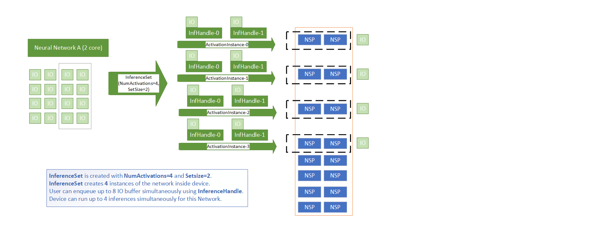
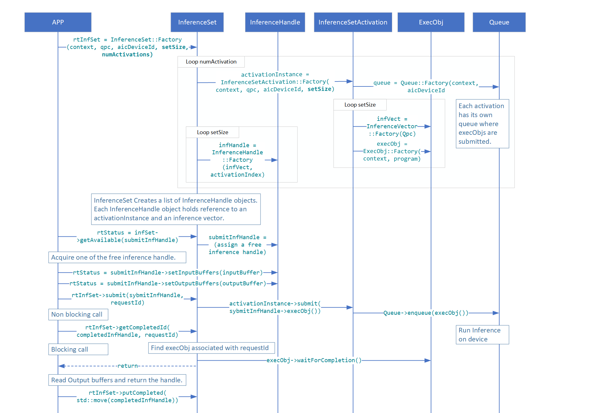
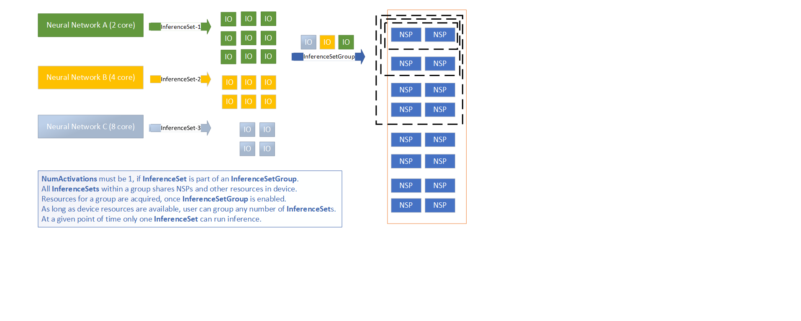
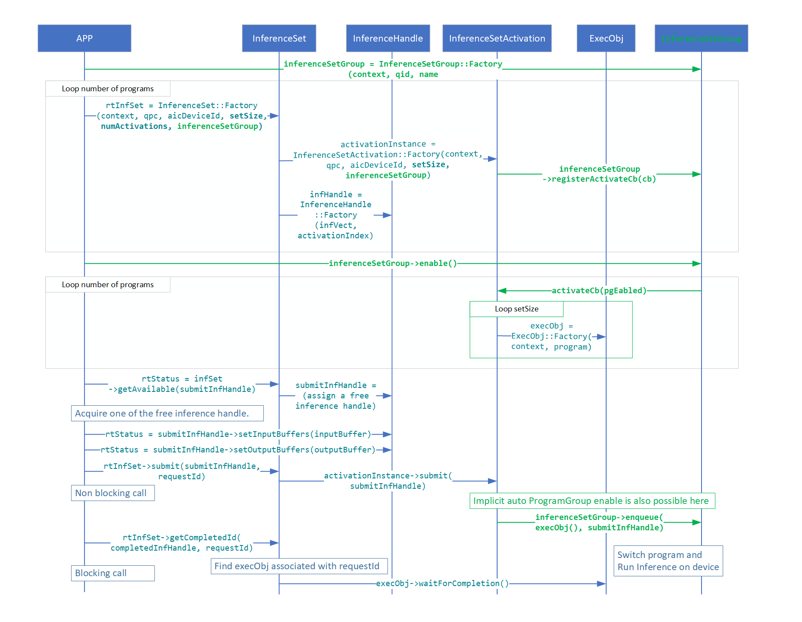

Runtime¶
The following document describes Qualcomm AIC 100 User space Linux Runtime classes design and implementation.
QPC Elements¶
QPC¶
Class Qpc is a main QPC API class type that provides functionality
to allocate a QPC from a filename or buffer, and also provides API to
query information related to the loaded QPC.
Class Qpc has 2 Factory functions to create a
std::shared_ptr<> of Qpc. There are couple of ways to create
QPC object.
The class is non-copyable, nor movable.
Creating from buffer and size.
Creating from a given filename (base-path plus filename).
If Factory instance creation is successful, the functions will
return an instance of std::shared_ptr<>, otherwise a proper
exception will be thrown.
Important API in class type Qpc includes the following:
getInfo()- returnsQpcInfo. See below for more info.getBufferMappings()- returns a container ofBufferMappings. EachBufferMappinginstance in the container includes information on the buffers as obtained fromQpcfile. Name, size, direction and index of buffers.getBufferMappingsV2()- returns a container ofv2::BufferMappings. Eachv2::BufferMappinginstance in the container includesBufferMappingsandIoShapesinformation on the buffers obtained from theQPCfile.IoShapescontains the default and allowed data dimensions of the buffer.getBufferMappingsDma- Same return type as above (getBufferMapping()) but for DMA allocated buffers instead of user’s heap allocated ones.getIoDescriptor()- returns pointer to QData which is a buffer and length of the QPC buffer.get()- returns a const pointer to QAicQpcObj - which is an opaque Data structure to Internal Program Container. Users have no visibility to the API of QAicQpcObj since it’s Opaque in the C layer.buffer()- returns the QPC buffer as a const pointer to uint8_t.size()- returns the size of the QPC buffer.
QpcFile¶
Class QpcFile is encapsulating the QPC file basepath and filename as
well as DataBuffer<QData> data member which holds the buffer of the
QPC file. QpcFile takes the base-path and the filename of the QPC,
where programqpc.bin is a default filename provided in the
constructor. QpcFile is a non-movable, non-copyable type.
It has a load() function that will load the content of the QPC into
DataBuffer<> which holds QData buffer representation internally.
There are few APIs provided by the QpcFile class type.
getBuffer()- returns aQDatabuffer const reference.data()- returns aconst uint8_tpointer to buffer.size()- returns the size of the loaded QPC file buffer.
QpcInfo¶
Struct QpcInfo is a simple struct type that aggregates a collection
of QpcProgramInfo (also referred to as “program”) and corresponding
collection of QpcConstantsInfo (also referred to as “constants”).
QpcProgramInfo¶
Struct QpcProgramInfo is a simple struct aggregating information
related to the content of the loaded QPC.
For example:
BufferMappings, user allocated or DMA.
Name identifying a segment in
QPCfile.Number of cores requires to run the program.
Program Index in the QPC.
Size of the program
Batch size.
Number of Semaphores, number of MC(MultiCast) IDs.
Total required memory to run the program.
QpcConstantsInfo¶
Struct QpcConstantsInfo defines the Constants info that are obtained
from the QPC file. It has the following attributes:
nameindexsize
BufferMappings¶
Vector BufferMappings is a vector of BufferMapping.
BufferMappings is created from QPC.
BufferMappings is used by API to store the Input/Output buffer
information for inference.
BufferMapping¶
Struct BufferMapping is a simple struct type that describes the
information of a buffer.
Struct BufferMapping has two constructors:
Creating by providing all of the data members.
Default constructor that creates an uninitialized
BufferMappinginstance.
Struct BufferMapping has following structure data members:
bufferName- string name identifying the buffer.index- an unsigned int that represent the index in an array of buffers.ioType- define the direction of a buffer from user’s perspective. An input buffer is from user to device. An output buffer is from device to user.size- buffer size in bytes.isPartialBufferAllowed-Partial bufferis a feature that allows buffer to have actual size that is smaller than what is specified in IO descriptor.isPartialBufferAllowedis set by IO descriptor. By settingisPartialBufferAllowedtrue, this buffer takes user buffer that is smaller than what’s specified bysize.dataType- define the format of buffer. The types of format is defined in structQAicBufferDataTypeEnum
QAicBufferDataTypeEnum¶
Struct QAicBufferDataTypeEnum is a simple struct type that defines
the data type of the BufferMapping.
Struct QAicBufferDataTypeEnum defines following data types:
BUFFER_DATA_TYPE_FLOAT- 32-bit float type (float)BUFFER_DATA_TYPE_FLOAT16- 16-bit float type (half, fp16)BUFFER_DATA_TYPE_INT8Q- 8-bit quantized type (int8_t)BUFFER_DATA_TYPE_UINT8Q- unsigned 8-bit quantized type (uint8_t)BUFFER_DATA_TYPE_INT16Q- 16-bit quantized type (int16_t)BUFFER_DATA_TYPE_INT32Q- 32-bit quantized type (int32_t)BUFFER_DATA_TYPE_INT32I- 32-bit index type (int32_t)BUFFER_DATA_TYPE_INT64I- 64-bit index type (int64_t)BUFFER_DATA_TYPE_INT8- 8-bit type (int8_t)BUFFER_DATA_TYPE_UINT8- unsigned 8-bit type (uint8_t)BUFFER_DATA_TYPE_FLOAT64C- 64-bit complex float typeBUFFER_DATA_TYPE_INVAL- invalid type
Context Elements¶
Context¶
There are various Linux Runtime core components like qpc,
program, execObj, and queue etc. which are needed to run
inference and enhance performance/usability. Class Context is a
primary class which helps to link all LRT core components. Context
object should be created first. Application creates a context to obtain
access to other API functions, the context is passed in other API calls.
The caller can also register for logging and error callbacks. A context
ID is passed to the error handler to uniquely identify the Context
object.
Class Context has a Factory functions to create a
std::shared_ptr<> of Context.
Context object is created from context properties, list of devices used
by this context, logging callback function, specific user data to be
included in log callback, an error handler to call in case of critical
errors and specific user data to be included in error handler callback.
If logging callback and error handler aren’t provided then default
defaultLogger and defaultErrorHandler will be used.
If Factory instance creation is successful, the functions will
return an instance of std::shared_ptr<>, otherwise a proper
exception will be thrown.
Important API in class type Context includes the following:
setLogLevel()- set new logging level to get logging information while running the program. See below for more details aboutQLogLevel.getLogLevel()- returns current logging level for givenContext.
QLogLevel¶
There are different type of logging level to see different kind of logs.
QL_DEBUG: set to this level to see debug logsQL_INFO: set to this level to see informative logsQL_WARN: set to this level to see warning logsQL_ERROR: set to this level to see error logs
LogCallback - It’s a logging callback lambda function.
ErrorHandler - It’s an error handler lambda function to call in
case of critical errors.
Profiling Elements¶
For overview of profiling feature see Profiling Support in Runtime.
ProfilingHandle¶
ProfilingHandle provides interface to use num-iter based profiling.
See Num-iter based
profiling for more information about
num-iter based profiling feature.
A ProfilingHandle object is created using the Factory method. The user
specifies one or more programs to profile and the profiling properties, such
as the profiling output type, number of samples to collect, report filename
prefix, and output directory. Profiling data is collected for the registered
programs and written to report files for the selected profiler. Reports are
written to the configured output directory, or to the current working
directory if none is specified.
Important API in class type ProfilingHandle includes the following:
start()- Start profiling. The handle collects up to the configured number of samples for its registered programs. Reaching the sample limit doesn’t stop the profiling handle.stop()- Stop profiling. Any admitted in-flight samples are completed before the profiling report files are written.
Inferencing Elements¶
QBuffer¶
QBuffer is a struct that contains pointer to the buffer and its
size. It can have Input or output buffer address from heap or DMA
memory. handle, offset and type are considered only when
type is QBUFFER_TYPE_DMABUF. It has following Members:
size- Total size of memory pointed by buf pointer or handle.buf- Buffer Pointer, must be valid in case of heap buffer.handle- Buffer Handle, must be valid in case of DMA buffer.offset- Offset within handle.type- Type of the buffer: heap or DMA.
InferenceHandle¶
InferenceHandle contains the input/output buffers and the id given
at the time of submission of inference. InferenceHandle can’t be
created directly by the user; user can get an available
InferenceHandle by calling getAvailable() API of
InferenceSet. InferenceHandle is a container that holds all data
needed for inference. Number of InferenceHandle objects created
depends on the set_size and num_activations parameters passed during
instantiation of InferenceSet. Number of InferenceHandle and
number of ExecObj created will be the same.
LifeCycle of InferenceHandle¶
InferenceHandleobjects are created whenInferenceSetis instantiated and all objects are moved to availableList vector from which user can retrieve it by callinggetAvailable()API ofInferenceSetWhen user calls
getAvailable()if availableList vector has anInferenceHandle, it’s popped out from the availableList and returned to user, otherwise this call is blocked until the user puts the usedInferenceHandleusingputCompleted()APIUser sets buffers in the InferenceHandle it got using
setBuffers(),setInputBuffers(), orsetOutputBuffers()APIsUser submits InferenceHandle using
submit()API ofInferenceSetTo get the completed
InferenceHandleuser can callgetCompletedId()and extract/read the output of inference fromInferenceHandleAfter processing the output of inference, user needs to call
putCompleted()API ofInferenceSetto put completedInferenceHandleback to availableList vector otherwisegetAvailable()call will be blocked
InferenceSet¶
InferenceSet is a C++ class that is used to submit inference. It
abstracts out lower level classes like Queue, Program and ExecObj and
provides an easier way of handling multiple activations in a single
group to submit inference.
List of APIs of InferenceSet
Factory(): Instantiates theInferenceSet.submit(shInferenceHandle, requestId): Submits an inference request for a given handle and associates it with a user-defined ID. This is a non-blocking call used for polling-based completion.submit(shInferenceHandle, notifyFn, userData): Submits an inference request and registers a callback function to be executed upon completion. This is a non-blocking call used for event-driven workflows.getCompletedId(infHandle, requestId, timeoutUs): Waits for and returns theInferenceHandleassociated with the specifiedrequestId. This is a blocking call.getAvailable(infHandle, timeoutUs): Retrieves an availableInferenceHandlefrom the internal pool. This call blocks if no handles are available.putCompleted(infHandle): Returns a usedInferenceHandleback to the pool, making it available for subsequent inferences.waitForCompletion(infHandle, timeoutUs): Waits for a previously submittedInferenceHandleto complete. User application can consume output buffers upon successful return.timeoutUsdefaults to 0 (wait until completion).waitForCompletion(timeoutUs): Blocks until all previously submitted inferences across all activations in the set have completed. This is a convenience API; results are discarded.timeoutUsdefaults to 0.
NumActivations and SetSize¶
NumActivations and SetSize are arguments of
InferenceSet::Factory API.
NumActivations:InferenceSetcreates this many numbers of network instances inside device. User can decideNumActivationsbased on number of cores required to run his network and number of available cores.SetSize: For each network instance, user application can simultaneously enqueue this many numbers of input/output buffers to run inferences. Recommended value is between 2 to 10. User should find an optimal value to achieve desired throughput (inferences/sec) and latency.

Activations and SetSize
Inference Flow Patterns¶
The InferenceSet API supports multiple programming models for executing inferences.
1. Synchronous (Polling) Flow
This pattern involves submitting a request and then waiting for the result.
Acquire a handle using
getAvailable().Set data using
handle->setBuffers(),handle->setInputBuffers(), orhandle->setOutputBuffers().Submit the request using
submit(infHandle, requestId).Wait for the result using
getCompletedId(infHandle, requestId).Process the output and return the handle using
putCompleted(infHandle).

Synchronous Inference Flow
2. Multi-threaded Flow
The synchronous polling flow can be executed in parallel across multiple application
threads. The QAicInferenceSetExample.cpp file demonstrates this pattern in the
runInferenceMultiThread function.
3. Asynchronous (Callback) Flow
This pattern uses a callback function for event-driven notification of completed inferences.
Define a callback function to process results.
Acquire a handle using
getAvailable().Set data using
handle->setBuffers(),handle->setInputBuffers(), orhandle->setOutputBuffers().Submit the request using the
submit(infHandle, notifyFn, userData)overload, passing a pointer to the callback. This call is non-blocking.The application can perform other work while waiting for the callback to be invoked by the runtime upon completion.
InferenceSetProperties¶
InferenceSetProperties defines properties to be consumed by
InferenceSet
List of members of InferenceSetProperties
programProperties: User can set different program properties which will be consumed internally byProgramobject. Notable programProperties are:dataPathTimeoutMs: After submission of inference, runtime waits for this milliseconds timeout period, if inference isn’t complete in this timeout period, error is returned.submitNumRetries: Number of times submission should be retried when the above timeout occurs.devMapping: specifies the physical devices to be used by the program and is applicable to networks that require either multiple devices or a single device to run.
queueProperties: User can set queue properties which will be consumed internally byQueueobject. Notable queueProperties are:numThreadsPerQueue: Number of threads spawned to process elements in the queue. Default 4.
inferenceSetGroup: User can create an over-subscription group by passing the sameInferenceSetGroupshared pointer to differentInferenceSetobjects.name: Defines name of the InferenceSet Object.id: Defines id of the InferenceSet Object.
InferenceSetGroup¶
Use this class to construct an InferenceSetGroup. A user application can pass this
object as part of InferenceSet properties to multiple InferenceSet objects. All
such InferenceSet objects will share the same set of resources on device. All
InferenceSet objects grouped using an InferenceSetGroup are activated once the
InferenceSetGroup object is enabled. The user has flexibility to enable an
InferenceSetGroup by calling the enable() function or by submitting an inference
to any of the associated InferenceSet objects.
enable(): Enable the InferenceSet group.disable(): Disable the InferenceSet group.release(): Releases the shared pointer reference from the static map of the InferenceSet group repository. User application should call this during clean up if theInferenceSetGroupobject was created using a unique name.Factory(): Instantiates InferenceSetGroup.
Over-subscription with InferenceSetGroup
All InferenceSet objects within a group share NSPs and other resources on device.
Only one InferenceSet can actively run on device at any given point in time.
InferenceSetGroup takes care of serializing inferences submitted to any associated
InferenceSet.
Constraints when using InferenceSetGroup:
Each
InferenceSetobject must be created withNumActivationsset to one.All associated
InferenceSetobjects are enabled together by callingenable()or by submitting the first inference.Once
InferenceSetGroupis enabled, no newInferenceSetobject can be added to the same group unlessdisable()is called first.

Over-subscription with InferenceSetGroup

Inference Flow with InferenceSetGroup